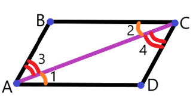
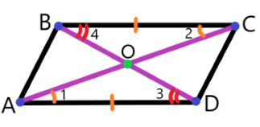

Определение 48:
Параллелограмм — четырёхугольник, у которого каждые две пары противолежащих сторон параллельны.
Теорема 77:
Противолежащие стороны параллелограмма равны.

Рис. 45 к обоснованию теоремы 77.
Обоснование теоремыДано: ABCD — параллелограмм.Доказать: BC = AD, AB = CD.Доказательство:Сделаем дополнительное построение: проведём диагональ AC.Рассмотрим △ABC и △CDA:1. AC — общая.2. ∠1 = ∠2 (как накрест лежащие при BC∥AD и секущей AC).3. ∠3 = ∠4 (как накрест лежащие при AB∥DC и секущей AC).Из утверждений 1—3 следует, что △ABC = △CDA (по стороне и двум прилежащим к ней углам).В равных треугольниках соответствующие стороны равны. То есть BC = AD и AB = CD, что и требовалось доказать.Теорема 78:
Противолежащие углы параллелограмма равны.
Теорема 79:
Диагонали параллелограмма точкой пересечения делятся пополам.

Рис. 46 к обоснованию теоремы 79.
Обоснование теоремыДано: ABCD — параллелограмм, AC и BD — диагонали, O — точка пересечения диагоналей.Доказать: AO = OC, BO = OD.Доказательство:Рассмотрим △AOD и △COB:1. ∠1 = ∠2 (как накрест лежащие при AD∥BC и секущей AC).2. ∠3 = ∠4 (как накрест лежащие при AD∥BC и секущей BD).3. AD = BC (как противолежащие стороны параллелограмма).Из утверждений 1—3 следует, что △AOD = △COB (по стороне и двум прилежащим к ней углам).В равных треугольниках соответствующие стороны равны, то есть AO = OC и BO = OD, что и требовалось доказать.Определение 49:
Высотой параллелограмма называют перпендикуляр, опущенный из точки, расположенной на прямой,
содержащей сторону параллелограмма, на прямую, содержащую противоположную сторону.
Признаки параллелограмма
Теорема 80:
Если в четырёхугольнике все пары противолежащих сторон равны, то этот четырёхугольник — параллелограмм.
Теорема 81:
Если в четырёхугольнике все пары противолежащих углов равны, то этот четырёхугольник — параллелограмм.
Теорема 82:
Если в четырёхугольнике диагонали точкой пересечения делятся пополам, то этот четырёхугольник — параллелограмм.